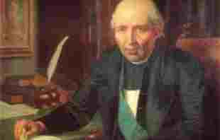
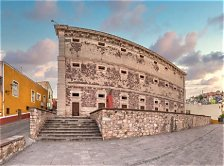
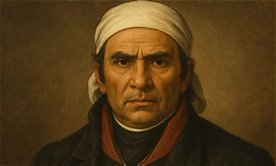
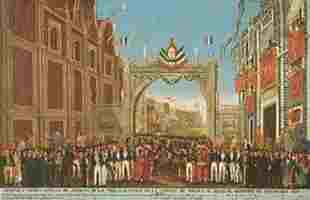

Un grupo de criollos, entre ellos Miguel Hidalgo, Ignacio Allende y Josefa Ortiz de Domínguez, se reunía en secreto para planear un levantamiento contra el gobierno español. La conspiración fue descubierta, pero Josefa Ortiz logró avisar a los demás para que pudieran actuar antes de ser arrestados.
En la madrugada, el cura Miguel Hidalgo tocó la campana de la parroquia y llamó al pueblo a levantarse en armas contra el mal gobierno. Este momento se conoce como el Grito de Dolores y marca el inicio de la guerra de Independencia. Por eso cada 15 de septiembre en la noche se celebra "el grito" en todo México.

Los españoles se refugiaron en la Alhóndiga de Granaditas, un edificio donde se guardaba grano. El ejército insurgente la atacó y, según la tradición, un minero conocido como "El Pípila" se cubrió con una losa en la espalda para quemar la puerta. Fue una de las primeras victorias de los insurgentes.

Después de la muerte de Hidalgo, José María Morelos continuó la lucha. En el Congreso de Chilpancingo presentó los Sentimientos de la Nación, un documento que pedía que México fuera independiente, que se aboliera la esclavitud y que todas las personas fueran iguales ante la ley.

Agustín de Iturbide y Vicente Guerrero se unieron con el Plan de Iguala y formaron el Ejército Trigarante. Este ejército entró triunfante a la Ciudad de México, y al día siguiente se firmó el Acta de Independencia. Así terminaron 11 años de guerra y México se convirtió en un país independiente.
